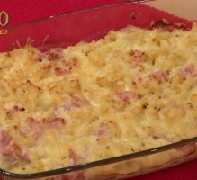

étape 3 Faites rissoler les tranches de poitrine fumée dans une petite poêle 5 min environ jusqu'à ce qu'elles soient cuites.
étape 4 Tartinez le pain de beurre et posez une tranche de fromage sur chaque tranche de pain. Couronnez d'une rondelle de tomate et de 2 tranches de poitrine fumée. Salez et poivrez.
étape 5 Mettez sous le gril très chaud jusqu'à ce que le fromage soit fondu et la poitrine croustillante.
étape 6 Servez chaud.

gratin de pâtes
Pour 4 personnes. Temps de préparation=30min.
Ingrédients pour le gratin de pates au jambon
300g de pate
150g de fromage rapé
4 tranche de jambon
Ingrédients pour la bechamel
1/2L de lait
50g de beurre
50g de farine
1 noix de muscade
sel et poivre du moulin
Préparation
étape 1: Réalisez la béchamel : Dans une casserole, faite fondre le beurre doucement. Une fois le beurre fondu, ajoutez la farine en une fois et mélangez. Laissez cuire le mélange jusqu'à ébullition pendant 3 minutes environ, afin de cuire le mélange.
étape 2: Ensuite, ajoutez le lait froid en une fois. Sur feu vif, faites cuire la béchamel tout en mélangeant avec un fouet. Salez, poivrez, et ajoutez une pointe de noix de muscade et poursuivez la cuisson. Il faut que la béchamel arrive à ébullition pour la cuire 3 minutes et pour qu'elle épaississe. Une fois cuite, mettez-la de côté.
étape 3: Dans une seconde casserole, fermée d'un couvercle, faîtes chauffer de l'eau jusqu'à ébullition. Une fois l'eau à ébullition, salez l'eau et ajoutez les pâtes. Remuez une fois. Laissez cuire le temps de cuisson indiqué sur le paquet de vos pâtes. Les pâtes doivent être al dente, car elles vont encore cuire au four.
étape 4: Une fois les pâtes cuites, égouttez-les. Coupez les tranches de jambon en morceaux. Dans un saladier, mélangez les pâtes, la béchamel, le jambon et le fromage râpé. Versez le tout dans un plat à gratin et saupoudrez d'encore un peu de fromage râpé.
étape 5: Enfournez dans un four préchauffé à 180°C, une dizaine de minutes, sur position grill. Surveillez toutefois la cuisson pour que votre gratin ne gratine pas trop vite.